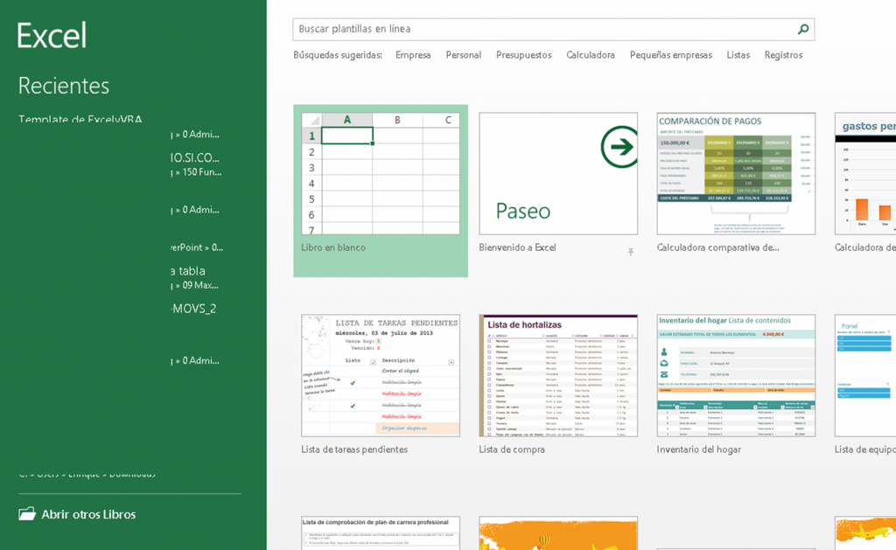

¿que es excel?
Excel es una herramienta que nos permite hacer cálculos de manera rápida y sencilla, dibujar gráficos a partir de la información que hemos dibujado, hacer análisis profundos de grandes cantidades de información y muchas otras cosas.
Excel es una herramienta que nos permite hacer cálculos de manera rápida y sencilla, dibujar gráficos a partir de la información que hemos dibujado, hacer análisis profundos de grandes cantidades de información y muchas otras cosas.
Para abrir un libro de Excel debemos hacer click en el icono de Excel que tendremos en el escritorio o pinchando en el icono de Excel del menú de Windows. Una vez que hayamos hecho esto veremos una pantalla como la siguiente:
Para insertar una fórmula deberemos ir a: Pestaña Fórmulas >> Grupo Biblioteca de Funciones Una vez que estemos en esta pestaña seleccionaremos de los desplegables la función que más nos convenga.
Esta función te permite hacer sumas de celdas o de rangos de celdas. En la siguiente imagen vemos como se usa la función suma para sumar tres celdas diferentes.
Esta función es la que nos permite obtener la media de una serie de valores. Al igual que en la función SUMA, podremos ir seleccionando las celdas una a una o seleccionar un completo rango de celdas.